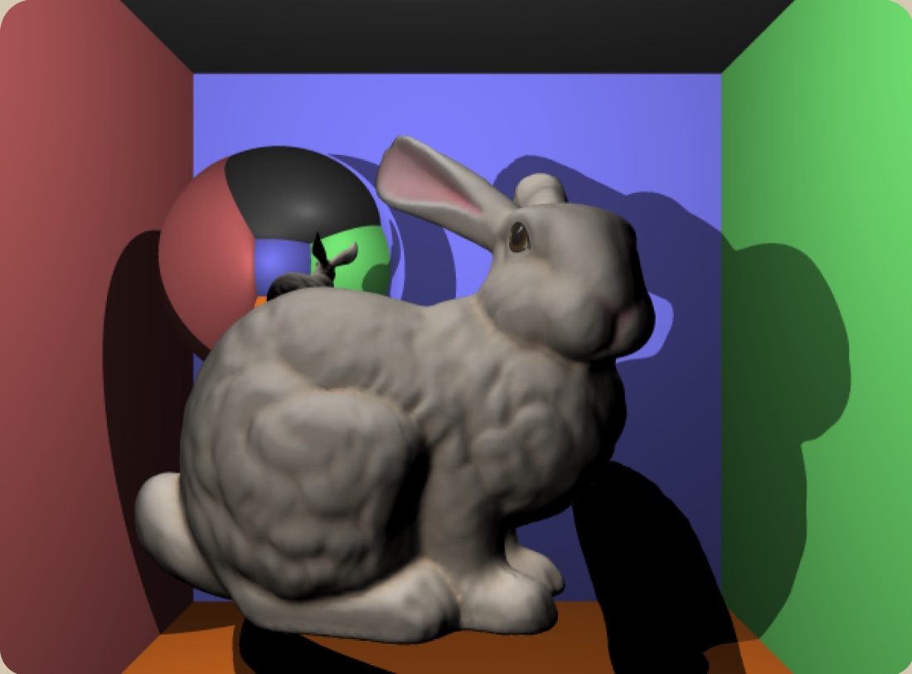

Order 01Machine learning

Tennis Match Projection Model
A model that predicts ATP match outcomes from player stats, surface and recent form. Trained on historical match data and served through a simple web app for live what-if predictions.
Case studies from things I've built and broken.
Order 01Machine learning
A model that predicts ATP match outcomes from player stats, surface and recent form. Trained on historical match data and served through a simple web app for live what-if predictions.
Order 02Mobile


A mobile app that gets friends off their phones and out on small real-world challenges, like visiting a local park or picking up a new hobby. Complete quests together to earn points and level up. Built in a team at VicHack.
Order 03Graphics

A program that turns a 3D scene into a realistic image. It follows rays of light as they travel and bounce, and works out the lighting, shadows and colour from what they hit.
Order 04Developer tools

A macOS app and CLI that gives coding agents shared memory. Plans, decisions and the reasons behind them carry from one teammate's Claude Code session into another's Cursor or Codex. Co-built with Skanda.